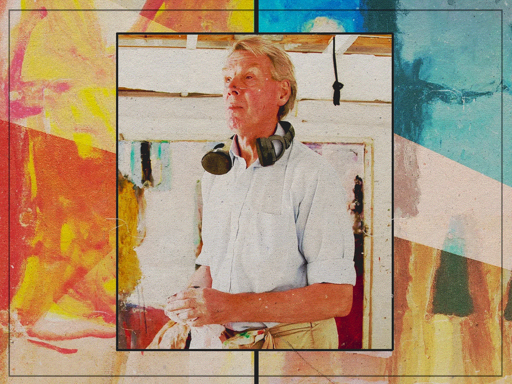

Painting Beyond Sight - Sargy Mann
Sargy Mann was a British painter whose life and work became nothing short of extraordinary. Known for his bold, vibrant landscapes and portraits, he built a successful artistic career. But his story truly reaches another level when, over time, he lost his sight and eventually became completely blind.
How He Learned to See Without Eyes
Despite his blindness, Sargy Mann refused to give up painting. Instead, he invented a remarkable method: he used carefully drawn grids, lengths of string, and his own memory to navigate his canvas. With touch and spatial hearing, he could “feel” where his brush was going and imagine his compositions in his mind's eye. The result was breathtaking. His post-blindness paintings weren’t just technically impressive - they were deeply moving. The colors, shapes, and energy in his later works often felt more intense and emotional than anything he had done before. Incredibly, these paintings sold for more than many of his earlier, sighted works. Sargy Mann literally redefined what it means to “see.” Through his own inner vision, he created works that challenged assumptions, defied limitations, and proved that creativity doesn’t need eyesight - it just needs heart and imagination.